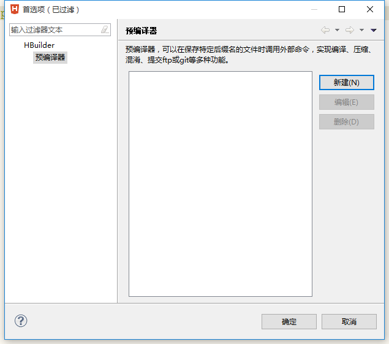
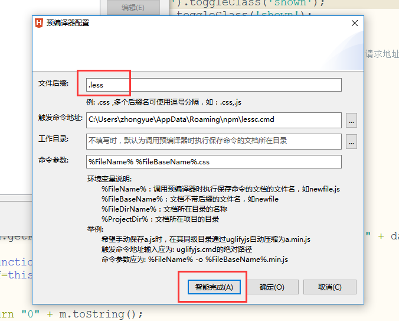

导入项目
-
依次打开菜单栏->工具->预编译器设置，打开后是这样的：
点击新建按钮
文件后缀为.less
触发命令地址就是lessc.cmd所在的地址（前提是已安装了less）
最后依次点击“智能完成”“确定”即可，以后每次less文件有改动保存的时候就会自动编译生成css文件了。如此只需在HTML文件中引用生成的CSS文件即可，不需要再在HTML文件中引用.less和less.js文件了。
但有的电脑会出现：'node' 不是内部或外部命令,也不是可运行的程序或批处理文件，这种情况就是你的电脑需要安装node.js，只需要安装node.js即可。